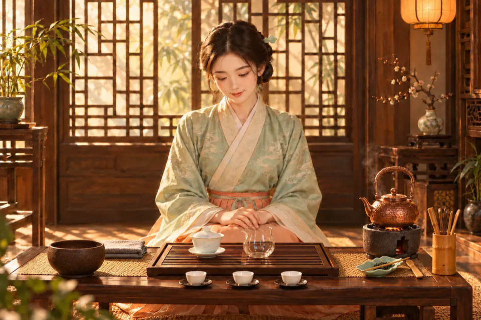

第 1 步・共 11 步
備具迎客
要點
常見錯誤
10
泡茶計時器
第 1 泡
泡茶流程示範
先揀一款茶，再跟着茶藝師逐步學。每一步都有手法特寫、要點和常見錯誤，參數會按所選的茶自動調整。

特寫動畫已把浸泡時間加快示範；實際沖泡請以上方計時器的秒數為準。
茶類百科
六大基本茶類大致按發酵程度由輕到重排列；普洱生茶以曬青毛茶自然陳化，茉莉花茶屬再加工茶，另列於後。點選一款茶，看它的泡法、茶性、適合人群與歷史。
常用技巧
泡茶的禮儀與技巧，大多同時照顧茶味和客人。每一項都可以播放特寫。
水溫與用水
一般原則：茶越嫩、發酵越輕，水溫越低；越粗老、發酵或焙火越重，水溫越高。
認識茶具
小測驗
茶藝課程
水溫、手勢、出湯的節奏，要在老師身邊練過才穩。香港古樹茶文化學會的茶藝課在佐敦及屯門上課，由認識茶類到完整茶席，逐步帶你練習。